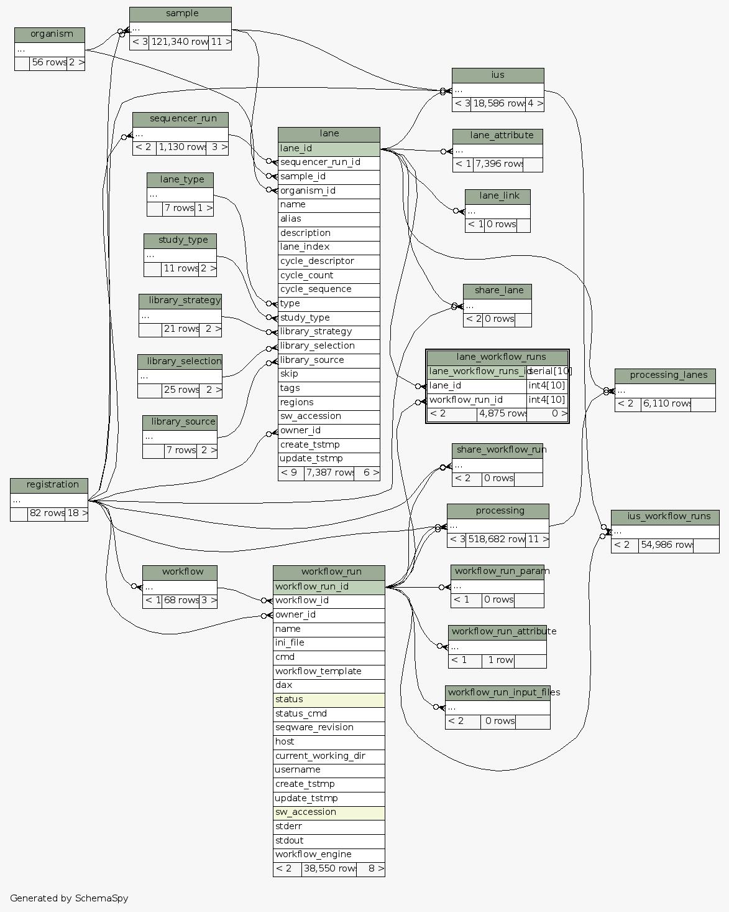

| Table test_seqware_meta_db.public.lane_workflow_runs Deprecated table used to associate lanes with workflow runs
|
Generated by SchemaSpy |
| ||||||||||||||||||||||||||||||||||||||||
Table contained 4,875 rows at Mon Mar 31 13:20 EDT 2014 | ||||||||||||||||||||||||||||||||||||||||
Indexes:
| Column(s) | Type | Sort | Constraint Name |
|---|---|---|---|
| lane_workflow_runs_id | Primary key | Asc | pk_lane_workflow_runs |
|
 |